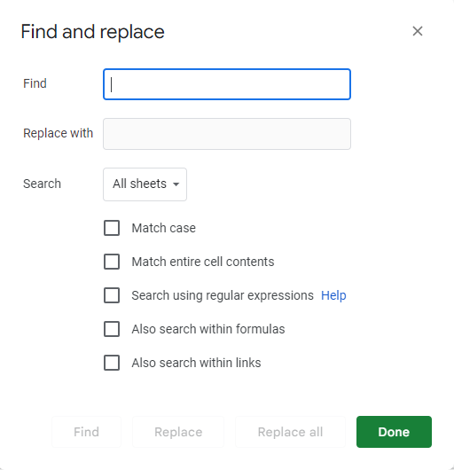

Step ɪɪ: Replace your commas with semicolons
You'll need to replace all the commas with semicolons. First, go to the sheet with all your words on it. Then, press ᴄᴛʀʟ+f and you should see something like this in the top-right corner

Click the three dots stacked on top of each other to the right, and you'll see a modal like this
In the part where it says "Find" put a comma (,), and below it, in the "Replace with" field, put a semicolon (;). Then, just below that in the dropdown, select "This sheet" and at the bottom, click "Replace all."
Why do I need to do this?
Rushk stores your dictionaries in ᴄꜱᴠ-type files, which means that each bit of information is seperated by commas. An example word would look like this:
risca,ʀɪskə,verb,A dangerous situation
But, if you were to put a comma in one of the fields, Rushk thinks a new field is starting, and could cut off part of your definition:
risca,ʀɪskə,verb,A dangerous situation, especially if the threat is omnipresent
risca /ʀɪskə/
verb. A dangerous situation
Or worse, it could cause a ripple effect:
risca,ʀɪskə,verb, strong, A dangerous situation
risca /ʀɪskə/
verb. strong